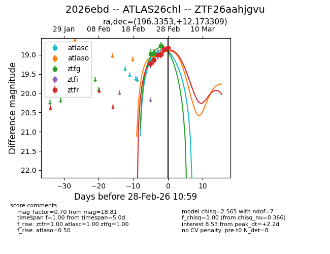
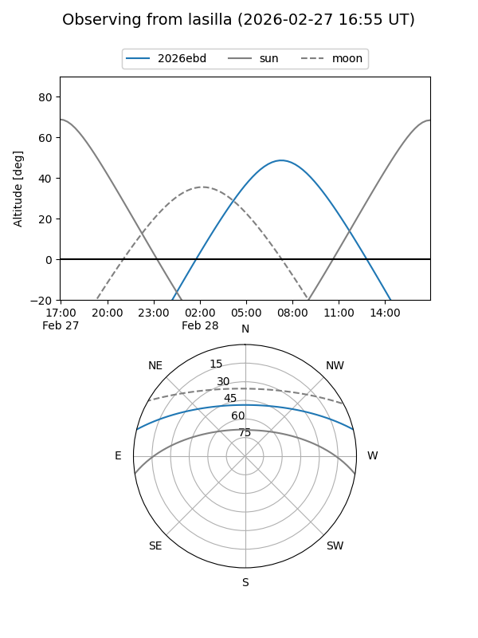
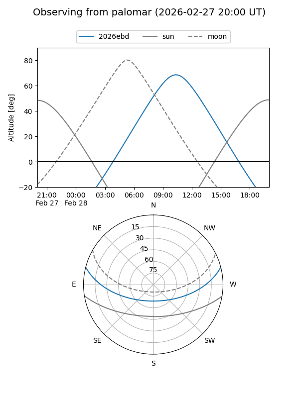
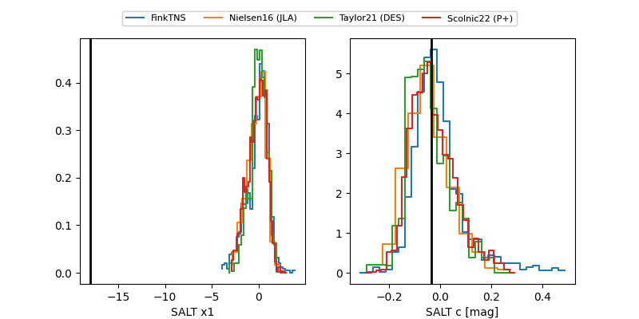

2026ebd
Target 2026ebd at 2026-02-28 11:00
Aliases and brokers:
FINK: link
Lasair: link
ALeRCE: link
TNS: link
YSE: link
alt names
ZTF26aahjgvu (ztf,fink_ztf)
2026ebd (tns,yse)
ATLAS26chl (atlas)
Coordinates:
equatorial (ra, dec) = 196.3353,+12.17331
equatorial (HMS+DMS) = 13:05:20.47,+12:10:23.91
galactic (l, b) = (315.9055,+74.69377)
Flags:
Photometry:
last atlasc=18.96, atlaso=19.01, ztfg=18.77, ztfr=18.81
2 atlasc, 1 atlaso, 3 ztfg, 6 ztfr detections
Lightcurve

Visibility


Additional plots
